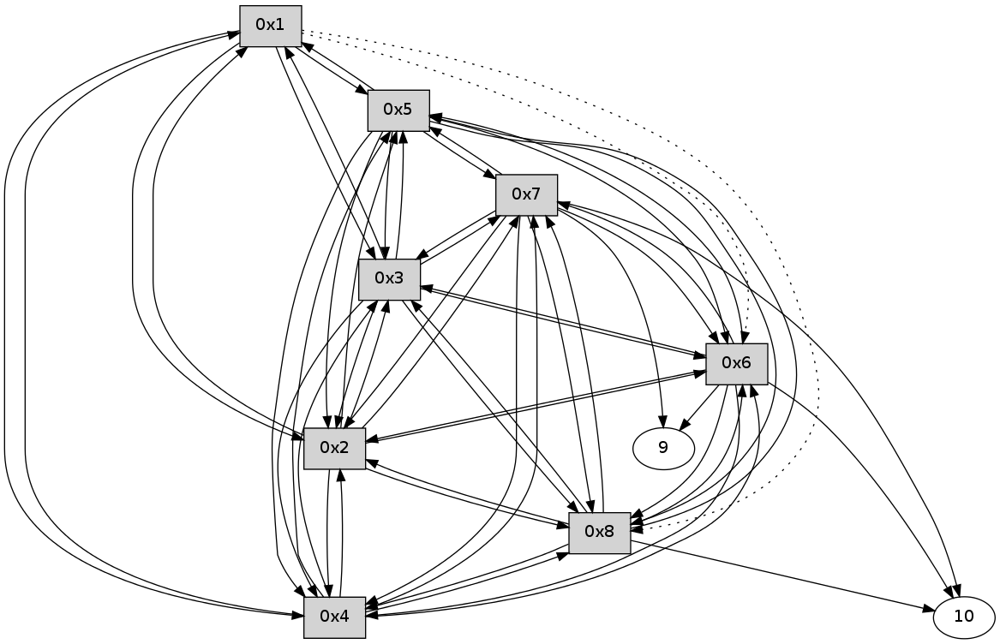

>> << IDX [start] -100 -25 -5 +0 +5 +25 +100 [280.159282923]
 Previous packets
----------------------------------------------------------------------
275.182245 beacon01(11f6) #0 coord=01,02,03,04,05,06,07,08,0a,09 cycle=688.0ms assoc
-- color-indic=0 64 c4 05
275.192396 beacon02(11f6) #0 coord=01,02,03,04,05,06,07,08,0a,09 cycle=688.0ms assoc 64 57 34
275.202382 beacon03(11f6) #0 coord=01,02,03,04,05,06,07,08,0a,09 cycle=688.0ms assoc 64 2d 79
275.212381 beacon04(11f6) #0 coord=01,02,03,04,05,06,07,08,0a,09 cycle=688.0ms assoc 64 5a 93
275.222382 beacon05(11f6) #0 coord=01,02,03,04,05,06,07,08,0a,09 cycle=688.0ms assoc 64 20 de
275.232381 beacon06(11f6) #0 coord=01,02,03,04,05,06,07,08,0a,09 cycle=688.0ms assoc 64 ae 09
275.242382 beacon07(11f6) #0 coord=01,02,03,04,05,06,07,08,0a,09 cycle=688.0ms assoc 64 d4 44
275.252386 beacon08(11f6) #0 coord=01,02,03,04,05,06,07,08,0a,09 cycle=688.0ms assoc 64 51 d5
275.407762 [Hello(1): seq=122 sym=5,3,2,4 asym=8,6 sysInfo= stat=5:4,0,0,0/3:6,0,0,0/2:0,0,0,0/4:4,0,0,0/8:8,0,0,0/6:3,0,0,0]
----------------------------------------------------------------------
275.970383 beacon01(11f6) #0 coord=01,02,03,04,05,06,07,08,0a,09 cycle=688.0ms assoc
-- color-indic=0 64 00 0b
275.980547 beacon02(11f6) #0 coord=01,02,03,04,05,06,07,08,0a,09 cycle=688.0ms assoc 64 93 3a
275.990518 beacon03(11f6) #0 coord=01,02,03,04,05,06,07,08,0a,09 cycle=688.0ms assoc 64 e9 77
276.000519 beacon04(11f6) #0 coord=01,02,03,04,05,06,07,08,0a,09 cycle=688.0ms assoc 64 9e 9d
276.010518 beacon05(11f6) #0 coord=01,02,03,04,05,06,07,08,0a,09 cycle=688.0ms assoc 64 e4 d0
276.020519 beacon06(11f6) #0 coord=01,02,03,04,05,06,07,08,0a,09 cycle=688.0ms assoc 64 6a 07
276.030520 beacon07(11f6) #0 coord=01,02,03,04,05,06,07,08,0a,09 cycle=688.0ms assoc 64 10 4a
276.040524 beacon08(11f6) #0 coord=01,02,03,04,05,06,07,08,0a,09 cycle=688.0ms assoc 64 95 db
276.092776 [Hello(6): seq=122 sym=10,7,5,3,8,4,2,9 sysInfo= stat=10:10,0,0,0/7:12,0,0,0/5:2,0,0,0/3:10,0,0,0/8:8,0,0,0/4:2,0,0,0/2:14,0,0,0/9:6,0,0,0]
276.121031 [Hello(5): seq=122 sym=1,2,7,6,3,8,4 sysInfo= stat=1:10,0,0,0/2:2,0,0,0/7:8,0,0,0/6:1,0,0,0/3:3,0,0,0/8:7,0,0,0/4:5,0,0,0]
276.138721 [Hello(3): seq=122 sym=1,2,7,5,6,8,4 sysInfo= stat=1:10,0,0,0/2:1,0,0,0/7:7,0,0,0/5:5,0,0,0/6:15,0,0,0/8:6,0,0,0/4:6,0,0,0]
276.155776 [Hello(7): seq=122 sym=10,5,6,8,3,2,4,9 sysInfo= stat=10:6,0,0,0/5:13,0,0,0/6:8,0,0,0/8:9,0,0,0/3:4,0,0,0/2:10,0,0,0/4:8,0,0,0/9:13,0,0,0]
276.181392 [Hello(2): seq=122 sym=1,7,5,3,8,4,6 sysInfo= stat=1:9,0,0,0/7:7,0,0,0/5:5,0,0,0/3:3,0,0,0/8:6,0,0,0/4:2,0,0,0/6:9,0,0,0]
276.184710 [Hello(8): seq=122 sym=2,7,5,6,3,4,10 sysInfo= stat=2:6,0,0,0/7:13,0,0,0/5:12,0,0,0/6:7,0,0,0/3:8,0,0,0/4:3,0,0,0/10:6,0,0,0]
276.219417 [Hello(4): seq=122 sym=1,2,5,6,3,8,7 sysInfo= stat=1:9,0,0,0/2:3,0,0,0/5:7,0,0,0/6:15,0,0,0/3:6,0,0,0/8:6,0,0,0/7:15,0,0,0]
----------------------------------------------------------------------
276.758521 beacon01(11f6) #0 coord=01,02,03,04,05,06,07,08,0a,09 cycle=688.0ms assoc
-- color-indic=0 64 bc 0e
276.768681 beacon02(11f6) #0 coord=01,02,03,04,05,06,07,08,0a,09 cycle=688.0ms assoc 64 2f 3f
276.778656 beacon03(11f6) #0 coord=01,02,03,04,05,06,07,08,0a,09 cycle=688.0ms assoc 64 55 72
276.788657 beacon04(11f6) #0 coord=01,02,03,04,05,06,07,08,0a,09 cycle=688.0ms assoc 64 22 98
276.798656 beacon05(11f6) #0 coord=01,02,03,04,05,06,07,08,0a,09 cycle=688.0ms assoc 64 58 d5
276.808658 beacon06(11f6) #0 coord=01,02,03,04,05,06,07,08,0a,09 cycle=688.0ms assoc 64 d6 02
276.818657 beacon07(11f6) #0 coord=01,02,03,04,05,06,07,08,0a,09 cycle=688.0ms assoc 64 ac 4f
276.828661 beacon08(11f6) #0 coord=01,02,03,04,05,06,07,08,0a,09 cycle=688.0ms assoc 64 29 de
276.886750 [Hello(1): seq=123 sym=5,3,2,4 asym=8,6 sysInfo= stat=5:5,0,0,0/3:7,0,0,0/2:1,0,0,0/4:5,0,0,0/8:9,0,0,0/6:4,0,0,0]
----------------------------------------------------------------------
277.546659 beacon01(11f6) #0 coord=01,02,03,04,05,06,07,08,0a,09 cycle=688.0ms assoc
-- color-indic=0 64 68 3b
277.556832 beacon02(11f6) #0 coord=01,02,03,04,05,06,07,08,0a,09 cycle=688.0ms assoc 64 fb 0a
277.566794 beacon03(11f6) #0 coord=01,02,03,04,05,06,07,08,0a,09 cycle=688.0ms assoc 64 81 47
277.576793 beacon04(11f6) #0 coord=01,02,03,04,05,06,07,08,0a,09 cycle=688.0ms assoc 64 f6 ad
277.586795 beacon05(11f6) #0 coord=01,02,03,04,05,06,07,08,0a,09 cycle=688.0ms assoc 64 8c e0
277.596794 beacon06(11f6) #0 coord=01,02,03,04,05,06,07,08,0a,09 cycle=688.0ms assoc 64 02 37
277.606795 beacon07(11f6) #0 coord=01,02,03,04,05,06,07,08,0a,09 cycle=688.0ms assoc 64 78 7a
277.616798 beacon08(11f6) #0 coord=01,02,03,04,05,06,07,08,0a,09 cycle=688.0ms assoc 64 fd eb
277.652325 [Hello(5): seq=123 sym=1,2,7,6,3,8,4 sysInfo= stat=1:11,0,0,0/2:2,0,0,0/7:9,0,0,0/6:1,0,0,0/3:4,0,0,0/8:8,0,0,0/4:6,0,0,0]
277.657730 [Hello(2): seq=123 sym=1,7,5,3,8,4,6 sysInfo= stat=1:10,0,0,0/7:7,0,0,0/5:6,0,0,0/3:3,0,0,0/8:7,0,0,0/4:3,0,0,0/6:9,0,0,0]
277.676938 [Hello(4): seq=123 sym=1,2,5,6,3,8,7 sysInfo= stat=1:10,0,0,0/2:4,0,0,0/5:8,0,0,0/6:15,0,0,0/3:6,0,0,0/8:6,0,0,0/7:15,0,0,0]
277.708045 [Hello(7): seq=123 sym=10,5,6,8,3,2,4,9 sysInfo= stat=10:7,0,0,0/5:14,0,0,0/6:8,0,0,0/8:10,0,0,0/3:4,0,0,0/2:11,0,0,0/4:9,0,0,0/9:14,0,0,0]
277.715930 [Hello(8): seq=123 sym=2,7,5,6,3,4,10 sysInfo= stat=2:7,0,0,0/7:14,0,0,0/5:13,0,0,0/6:7,0,0,0/3:8,0,0,0/4:5,0,0,0/10:6,0,0,0]
277.738673 [Hello(3): seq=123 sym=1,2,7,5,6,8,4 asym= sysInfo= stat=1:11,0,0,0/2:3,0,0,0/7:9,0,0,0/5:6,0,0,0/6:15,0,0,0/8:8,0,0,0/4:8,0,0,0]
277.748316 [Hello(6): seq=123 sym=10,7,5,3,8,4,2,9 sysInfo= stat=10:12,0,0,0/7:14,0,0,0/5:4,0,0,0/3:12,0,0,0/8:10,0,0,0/4:4,0,0,0/2:15,0,0,0/9:8,0,0,0]
----------------------------------------------------------------------
278.334795 beacon01(11f6) #0 coord=01,02,03,04,05,06,07,08,0a,09 cycle=688.0ms assoc
-- color-indic=0 64 d4 3e
278.344954 beacon02(11f6) #0 coord=01,02,03,04,05,06,07,08,0a,09 cycle=688.0ms assoc 64 47 0f
278.354931 beacon03(11f6) #0 coord=01,02,03,04,05,06,07,08,0a,09 cycle=688.0ms assoc 64 3d 42
278.364931 beacon04(11f6) #0 coord=01,02,03,04,05,06,07,08,0a,09 cycle=688.0ms assoc 64 4a a8
278.374931 beacon05(11f6) #0 coord=01,02,03,04,05,06,07,08,0a,09 cycle=688.0ms assoc 64 30 e5
278.384931 beacon06(11f6) #0 coord=01,02,03,04,05,06,07,08,0a,09 cycle=688.0ms assoc 64 be 32
278.394931 beacon07(11f6) #0 coord=01,02,03,04,05,06,07,08,0a,09 cycle=688.0ms assoc 64 c4 7f
278.404935 beacon08(11f6) #0 coord=01,02,03,04,05,06,07,08,0a,09 cycle=688.0ms assoc 64 41 ee
278.461941 [Hello(1): seq=124 sym=5,3,2,4 asym=8,6 sysInfo= stat=5:6,0,0,0/3:8,0,0,0/2:2,0,0,0/4:6,0,0,0/8:10,0,0,0/6:5,0,0,0]
----------------------------------------------------------------------
279.122931 beacon01(11f6) #0 coord=01,02,03,04,05,06,07,08,0a,09 cycle=688.0ms assoc
-- color-indic=0 64 10 30
279.133109 beacon02(11f6) #0 coord=01,02,03,04,05,06,07,08,0a,09 cycle=688.0ms assoc 64 83 01
279.143066 beacon03(11f6) #0 coord=01,02,03,04,05,06,07,08,0a,09 cycle=688.0ms assoc 64 f9 4c
279.153065 beacon04(11f6) #0 coord=01,02,03,04,05,06,07,08,0a,09 cycle=688.0ms assoc 64 8e a6
279.163066 beacon05(11f6) #0 coord=01,02,03,04,05,06,07,08,0a,09 cycle=688.0ms assoc 64 f4 eb
279.173066 beacon06(11f6) #0 coord=01,02,03,04,05,06,07,08,0a,09 cycle=688.0ms assoc 64 7a 3c
279.183067 beacon07(11f6) #0 coord=01,02,03,04,05,06,07,08,0a,09 cycle=688.0ms assoc 64 00 71
279.193072 beacon08(11f6) #0 coord=01,02,03,04,05,06,07,08,0a,09 cycle=688.0ms assoc 64 85 e0
279.240949 [Hello(2): seq=124 sym=1,7,5,3,8,4,6 sysInfo= stat=1:11,0,0,0/7:8,0,0,0/5:6,0,0,0/3:4,0,0,0/8:8,0,0,0/4:4,0,0,0/6:10,0,0,0]
279.278915 [Hello(5): seq=124 sym=1,2,7,6,3,8,4 sysInfo= stat=1:12,0,0,0/2:4,0,0,0/7:10,0,0,0/6:2,0,0,0/3:5,0,0,0/8:9,0,0,0/4:7,0,0,0]
279.281869 [Hello(7): seq=124 sym=10,5,6,8,3,2,4,9 sysInfo= stat=10:8,0,0,0/5:14,0,0,0/6:9,0,0,0/8:11,0,0,0/3:5,0,0,0/2:12,0,0,0/4:9,0,0,0/9:14,0,0,0]
279.305951 [Hello(8): seq=124 sym=2,7,5,6,3,4,10 sysInfo= stat=2:8,0,0,0/7:15,0,0,0/5:14,0,0,0/6:8,0,0,0/3:9,0,0,0/4:5,0,0,0/10:7,0,0,0]
279.320309 [Hello(4): seq=124 sym=1,2,5,6,3,8,7 sysInfo= stat=1:11,0,0,0/2:5,0,0,0/5:9,0,0,0/6:0,0,0,0/3:7,0,0,0/8:8,0,0,0/7:1,0,0,0]
279.326620 [Hello(3): seq=124 sym=1,2,7,5,6,8,4 sysInfo= stat=1:12,0,0,0/2:4,0,0,0/7:10,0,0,0/5:7,0,0,0/6:0,0,0,0/8:9,0,0,0/4:9,0,0,0]
279.366295 [Hello(6): seq=124 sym=10,7,5,3,8,4,2,9 sysInfo= stat=10:12,0,0,0/7:15,0,0,0/5:4,0,0,0/3:13,0,0,0/8:11,0,0,0/4:5,0,0,0/2:0,0,0,0/9:8,0,0,0]
----------------------------------------------------------------------
279.911067 beacon01(11f6) #0 coord=01,02,03,04,05,06,07,08,0a,09 cycle=688.0ms assoc
-- color-indic=0 64 ac 35
279.921230 beacon02(11f6) #0 coord=01,02,03,04,05,06,07,08,0a,09 cycle=688.0ms assoc 64 3f 04
279.931202 beacon03(11f6) #0 coord=01,02,03,04,05,06,07,08,0a,09 cycle=688.0ms assoc 64 45 49
279.941202 beacon04(11f6) #0 coord=01,02,03,04,05,06,07,08,0a,09 cycle=688.0ms assoc 64 32 a3
279.951204 beacon05(11f6) #0 coord=01,02,03,04,05,06,07,08,0a,09 cycle=688.0ms assoc 64 48 ee
279.961203 beacon06(11f6) #0 coord=01,02,03,04,05,06,07,08,0a,09 cycle=688.0ms assoc 64 c6 39
279.971203 beacon07(11f6) #0 coord=01,02,03,04,05,06,07,08,0a,09 cycle=688.0ms assoc 64 bc 74
279.981206 beacon08(11f6) #0 coord=01,02,03,04,05,06,07,08,0a,09 cycle=688.0ms assoc 64 39 e5